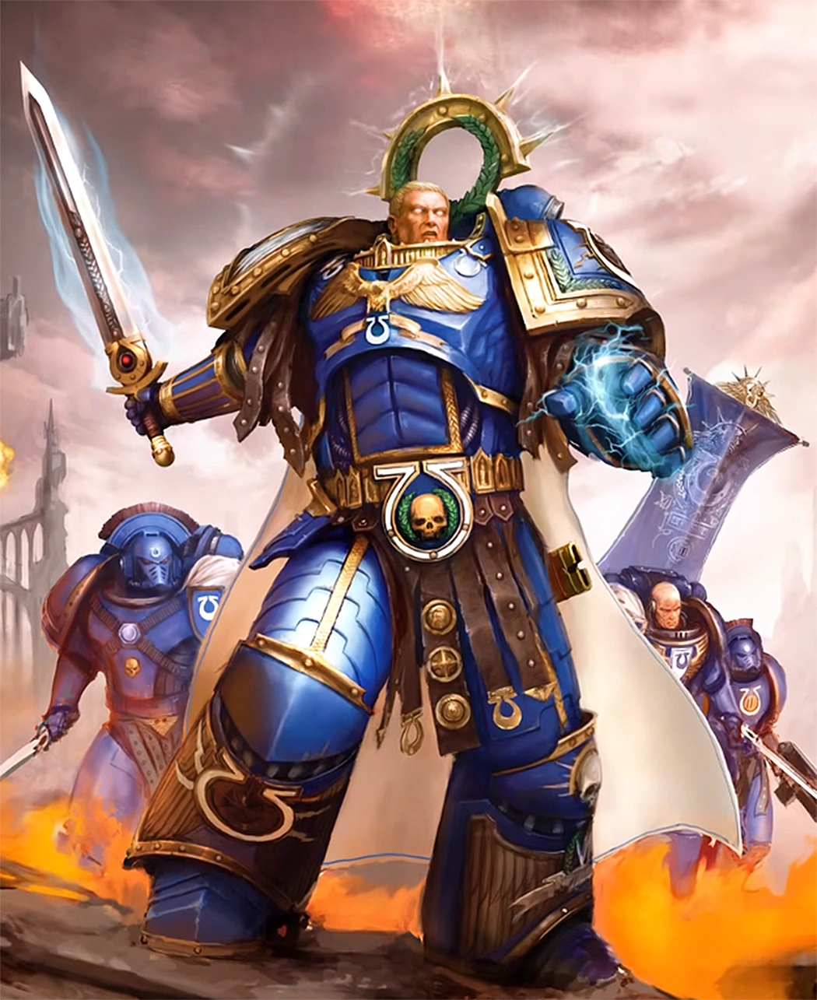

XIII
Legiones Astartes · Chapter Dossier
Roboute Guilliman,
the Avenging Son
Primarch of the Ultramarines, Master of Ultramar, author of the Codex Astartes, and Lord Commander of the Imperium. A fan reference archive, split across pages by topic.

I
images/hero/guilliman-portrait.jpg
portrait · 900×1200
Fig. i: Guilliman in full war-plate.
Legion
XIII, Ultramarines
Homeworld
Macragge
Domain
Five Hundred Worlds
Title
Lord Commander
ContentsNine folios
Where to start
Each topic below is its own page. Pick one, or read them in order.
01
The Primarch
Guilliman's origin on Macragge, the Great Crusade, the betrayal at Calth, the Codex Astartes, and his death and return.
Read →
02
The Emperor of Mankind
Who the Emperor is, the primarchs, the Great Crusade, and the wound that put him on the Golden Throne.
Read →
03
Ultramar
The Five Hundred Worlds of Guilliman's own empire, and the register of its key holdings.
Read →
04
The Tyranid Invasion
What the Tyranids are, and the Battle for Macragge against Hive Fleet Behemoth.
Read →
05
Heroes of Macragge
Marneus Calgar, Demetrian Titus, Cato Sicarius, Uriel Ventris, Varro Tigurius and Telion.
Read →
06
Dreadnoughts
How a gravely wounded Space Marine keeps fighting for millennia, interred in iron.
Read →
07
Successor Chapters
The dozens of Chapters founded from Ultramarines gene-seed.
Read →
08
Further Reading
Where fans go for full lore, official art, rules and discussion.
Read →